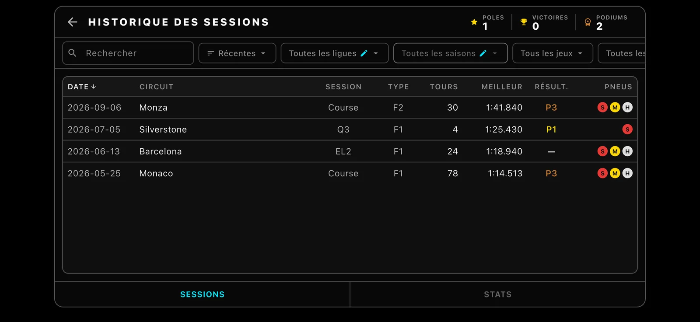
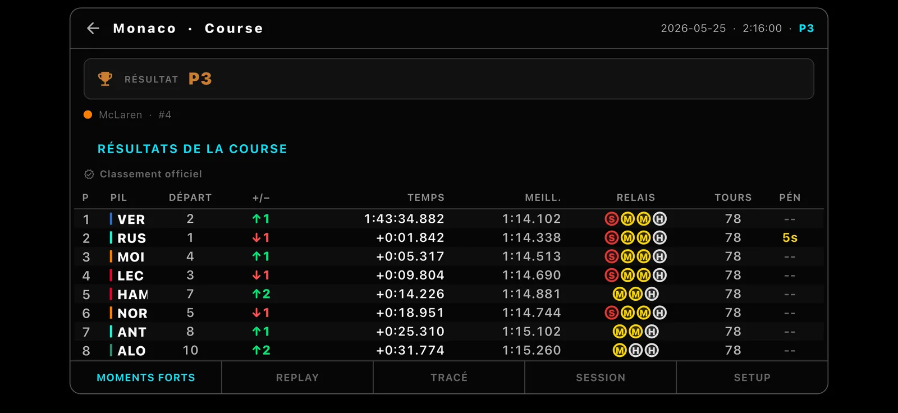

Gratuit
- Chaque session est enregistrée ; l’enregistrement n’est jamais bloqué
- Toutes vos sessions listées, avec des statistiques tirées de toutes
- Votre session la plus récente en entier, avec faits marquants, historique des tours, replay et tracés
Comment ça marche
Retrouvez n’importe quelle session enregistrée, lisez ses résultats, revivez une course et analysez vos tours.
Avec le suivi des sessions activé (Paramètres → RÉGLAGES), JMD enregistre chaque session à sa fin. Après une course, il vous dit où vous avez terminé, avec un lien Incorrect ? si vous devez corriger la façon dont la course s’est terminée. Il ne vous pose la question que si la télémétrie s’arrête et qu’il ne peut vraiment pas savoir si la session est finie.
Ouvrez l’Historique des sessions depuis l’écran d’accueil, ou touchez Passées sur le mur des stands.
L’onglet SESSIONS liste chaque session enregistrée. Utilisez la recherche, le tri et les filtres par ligue, saison, jeu, formule et type de session. L’onglet STATS rassemble vos chiffres de carrière, et la barre de titre compte vos poles, victoires et podiums.

Touchez une session pour l’ouvrir. Les onglets s’adaptent au type de session :
Les résultats donnent le classement officiel : position de départ, places gagnées ou perdues, temps de course, meilleur tour, relais de pneus, tours et pénalités.

Les sessions plus anciennes restent dans la liste avec le badge Jax Pro. Rien n’est supprimé quand un abonnement prend fin, et un nouvel abonnement rouvre les mêmes données.